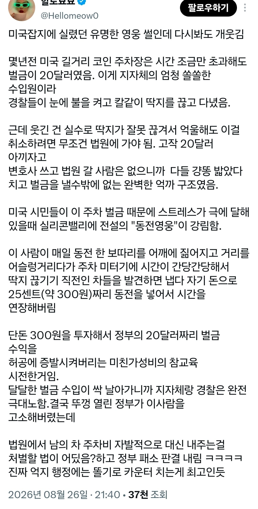

미국 길거리의 코인영웅
댓글
진짜 영웅이네
코인주차기 주토피아 그거네 ㅋㅋ
저쪽 신사분이 계산했습니다 이게진짜있넼ㅋㅋ
정부 고소는 진짜 개씨발럼들이네..
진짜 계도의 목적이 벌금이 아니라 정부 운용 수익이었다는게 무슨 유사국가같은 레전드네 ㅋㅋㅋ
미국 자체가 거대한 나이트시티임 ㅋㅋ
이게 사실 벌금이나 파킹 미터 운영이 딱히 가이드라인이 있는 것도 아니고 지방자치제가 강한 미국 성격상 대부분의 경우 시정부에서 운영하고 시 정부에선 저 파킹미터 + 벌금이 꽤 쏠쏠한 벌이인 것도 사실임. 심지어 저걸 외부업체에 하청을 줘버리는 시들도 있는데, 그런 업체들은 칼같이 벌금 딱지 붙이지. 그런 외부업체가 알고보니 시장이랑 아는 사람이라던가 해서 감방가는 경우도 가끔씩 있고...
고소는 진짜 애미뒤졌네
"그저 제우스의 법도를 지키고 있었을 뿐이오"
텔레마코인
ㅋㅋㅋㅋㅋㅋㅋ 생각도못했네
동전을 넣으면 댕~
정신나간 지자체랑 경찰들이네
대협!
미국에선 정부가 먼져 선빵 갈기고 지게되면 맞소송으로 배상액 단위가 억단위로 찍혀서 노후자금까지 마련하셧을듯
정부에 차 한대마다 25센트씩 기부한 대협이잖아
이딴게 세계1황 선진국?
그래서 무슨 코인 매수하면됨?
도대체 무슨 법으로 고소했을까
경찰업무방해죄?
자기돈으로 선행했는데 고소쳐먹네 ㅋㅋㅋㅋㅋㅋ 병신나라
돈도있고 시간도많은
정부고소에서 뭘알수 있냐면 사실상 국가는 국민들상대로 삥뜯는걸 사업으로 생각함. 우리나라도 존나 심한편임..
그게 사업. 맞.음.
다크나이트
비슷한 한국 케이스로 릴레이 1인 시위가 있음.
집시법에서는 "여러 사람이" 집회 시위하는경우 허가 승인 동의 신고 등을 하게 돼있음.
근데 1인이서 하면 집시법 적용 자체가 안됨.
심지어 매일 다른사람이 한명씩 시위해도 "개인 표현의 자유권"이라는, 무려 헌법이 보장하는 개인의 권한이 됨.
뭘 잘 모르는 경찰들이 집시법 위반으로 현행범 체포한다고 하면 몸싸움해도 됨. 현행범은 다 긴급체포 가능한것도 아니고, 애초에 현행'범'도 아님. 1인 시위를 위법으로 만드는 법은 아직 존재하지 않음.
'1인 시위 위법 = 독재국가 할꺼다'라는 뜻이라서 다같이 깽판쳐도 됨ㅋㅋ
시위 내용이랑은 상관이 없나?
혼자서 피켓들고 북한찬양하면 안잡아갈건 아니자너
그건 잡혀갈거같은데
그건 국보법에 걸리는 거 아님? 이적단체 찬양
당연히 안보, 명예훼손, 모욕, 공연음란, 통행방해, 자영업자 등의 업무방해, 욕설, 폭행(120dB이상 확성기로 인한 소음성 폭행포함)같은건 별개의 법을 적용받음.
집시법의 적용과는 관계없다지만 그래도 다년간 개드립에서 배운 각종 법들 정도는 오프라인에서 지켜야함ㅋㅋ
그래도 1인시위를 할 정도면 본인딴에 꽤나 억울한 사연일거고, 사안에 따라 넓게 보면 뭐라도 하나 트집잡혀 고소정도는 당할 수 있음. 그 고소 죄목에서 집시법 하나가 빠져서 부담이 완화될 뿐임.
또한 법을 잘 활용해서 1인시위를 하려면 "공익성 제보"에 관대한 것도 이용하면 좋다. -능- 아재의 "자판기 아짐 보씨요"같은게 좋은 예시임. 기계는 죽소 라고 협박했으니 협박죄도 적용 가능할 수 있지만 "이거시 한두 번이 아니"므로 능아재 외 시민 다수의 피해를 막기위해 공익 목적으로 긴급조치한 글이라 볼 수도 있거든.
현실적으로는 냅다 판떼기와 매직부터 찾지 말고, 신문고 및 사회단체 등 유관기관에 민원접수부더 싹 때리고 "추가로" 1인시위를 하는게 공익제보로서의 특권을 인정받기 쉬움. 반대로 말하면 한국에 사회단체가 몇만개 쯤 되는데 제보할만한 곳이 없다면 내가 정당한 이유로 사회고발을 하는건가 하고 다시 생각해볼 필요가 있음.
멋지네
무슨무슨죄가 저기도 있네ㅋㅋㅋㅋ
1. 실리콘 밸리가 아니라 뉴 햄프셔에서 일어난 사건이다. (City of Keene v. Cleaveland, 167 N.H. 731, 118 A.3d 253 (2015)) 캘리포니아는 애초에 주법상 남의 주차미터기에 돈 넣어주는게 불법임.
2. 한 사람이 아니라 6명 정도가 비슷한 행동을 하고 다녔음.
3. 동전을 넣었다고 기소된게 아니라 단체로 몰려가서 단속원에게 몸통박치기 하고 동영상을 촬영해서 인터넷에 올리는 등의 괴롭힘으로 인해 단속원들이 퇴사하거나 심리상담을 받게 한 혐의로 기소됨.
4. 사건이 일어난 킨의 주차 벌금은 20달러가 아니다
결론: 로빈후딩 소송으로 소설 쓴 트위터 똥글
정 보추
보추
정정추
아 몰라 난 개드립을 믿을꺼야!
캘리포니아 주법(State Law) 전체를 통틀어 타인의 주차 미터기에 돈을 넣어주는 행위(Meter Feeding)를 일괄적으로 금지하는 법은 없습니다. 캘리포니아 차량법(California Vehicle Code)에는 타인의 미터기에 동전을 넣는 행위 자체를 처벌하는 조항이 존재하지 않습니다.
다만 주의할 부분은 있습니다. 캘리포니아에서는 주법이 아니라 각 도시의 조례가 별도로 적용될 수 있습니다.
예를 들어 로스앤젤레스에서는 주차미터기에 돈을 넣어 주차시간을 연장하는 것 자체가 전면적으로 금지된 것이 아니라, 해당 차량의 법정 최대 주차시간을 초과하도록 돈을 넣어 시간을 연장하는 행위가 금지되어 있습니다.
얘가 한 말도 다 맞는건 아닌게 코미디네 ㅋㅋㅋㅋㅋㅋㅋㅋㅋㅋㅋ
그러게. 검증안된 사족은 붙이지 말 걸 그랬네
300원 <<<<<<< 니들 빡치게 할때 나의 즐거음
ㅋㅋㅋㅋㅋ
캣맘 집에 사료뿌리기 같은 느낌인가?

동상만들어줘야한다